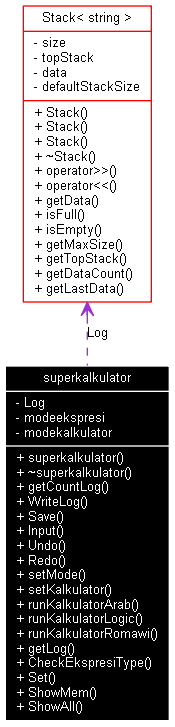

superkalkulator Class Reference
Kelas besar untuk menangani masukan untuk input, setting, dan run kalkulator.
More...
#include <superkalkulator.h>
Collaboration diagram for superkalkulator:

[legend]List of all members.
Detailed Description
Kelas besar untuk menangani masukan untuk input, setting, dan run kalkulator.
The documentation for this class was generated from the following files:
Generated on Thu Mar 26 00:29:16 2015 by
 1.4.5
1.4.5